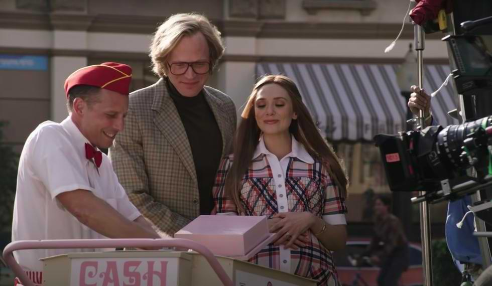
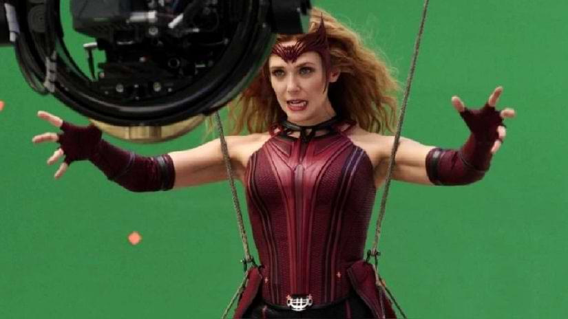

Producción
En 2009, Marvel reunió a un grupo de guionistas para escribir guiones cinematográficos para
personajes menos conocidos, entre los que se encontraba Vision .
Durante la rueda de prensa de Avengers: Infinity War , Bob Iger se acercó a Kevin Feige para
hacer una serie de televisión para Disney + , el próximo servicio de transmisión de Disney en
ese momento. Luego, Feige tuvo conversaciones con Elizabeth Olsen y Paul Bettany porque sintió
que Scarlet Witch y Vision tenían muchas más historias que contar, ya que las películas solo
habían arañado la superficie de su relación.
Durante el evento de estreno de Avengers: Endgame , Elizabeth Olsen reveló que la producción de
WandaVision comenzaría en el otoño de 2019 y que la serie duraría seis horas.

-
El 18 de septiembre de 2018, Variety informó que Marvel Studios estaba desarrollando una
serie
de televisión limitada para Scarlet Witch en Disney +, con Elizabeth Olsen lista para
repetir su papel de Marvel Cinematic Universe para la serie, mientras que Kevin Feige fue confirmado como productor ejecutivo.
-
El 30 de octubre de 2018, / Film informó que se esperaba que Paul Bettany repitiera su
papel de Vision en Marvel Cinematic Universe y desempeñara un papel importante en la serie Scarlet Witch,
que se centraría en la relación entre Vision y Scarlet Witch.
-
El 30 de noviembre de 2018, Deadline informó que la serie estaba programada para
estrenarse en
2019 y que se titularía Vision and the Scarlet Witch , aunque el título se eliminó más
tarde del
artículo.
-
El 11 de abril de 2019, durante el Día del Inversor de Disney, se reveló que la serie se
titularía WandaVision y que se estrenaría durante el segundo año de Disney +.
-
El 9 de enero de 2019, The Hollywood Reporter informó que Jac Schaeffer actuaría como
showrunner
y productor ejecutivo de la serie y escribiría el episodio piloto. También informaron
que la
serie se titularía The Vision y Scarlet Witch .
- El 11 de abril de 2019, durante el Día del Inversor de Disney, se reveló que la serie se
titularía WandaVision y que se estrenaría durante el segundo año de Disney +.
-
Durante el evento de estreno de Avengers: Endgame , Elizabeth Olsen reveló que la
producción de
WandaVision comenzaría en el otoño de 2019 y que la serie duraría seis horas.
-
El 20 de julio de 2019, en San Diego Comic-Con 2019, Kevin Feige anunció que la serie
estaba
programada para debutar en Disney + en la primavera de 2021. También se anunció que
Teyonah
Parris aparecería en la serie como Monica Rambeau.
- El 23 de agosto de 2019, en la D23 Expo 2019, Kevin Feige anunció que Kat Dennings y Randall
Park estaban listos para repetir sus papeles en Marvel Cinematic Universe de Darcy Lewis
y Jimmy
Woo , respectivamente en la serie y que Kathryn Hahn se había unido al elenco en un
papel no
revelado. También se reveló que Matt Shakman dirigiría los seis episodios.
- En septiembre de 2019, se informó que la serie comenzaría a producirse el 4 de noviembre
de 2019
en Atlanta.

-
El 18 de diciembre de 2019, Christophe Beck reveló que compondría la partitura de la
serie.
-
El 1 de enero de 2020, Disney + publicó un video en Twitter anunciando lo que llegará al
servicio en 2020, revelando que la serie debutaría en 2020 en lugar de 2021.
-
El 4 de febrero de 2020, Bob Iger anunció que la serie debutaría en diciembre de 2020.
-
El 1 de marzo de 2020, se informó que la serie había terminado la fotografía principal.
-
El 14 de marzo de 2020, Marvel Studios detuvo la producción de WandaVision , junto con
The
Falcon y The Winter Soldier y Loki , como resultado de la pandemia de COVID-19 .
-
El 4 de junio de 2020, se informó que la serie comenzaría a tomar fotografías
adicionales en
julio en Los Ángeles .
-
El 16 de septiembre de 2020, Disney + publicó un video en Twitter anunciando algunos de
los
títulos que llegarían al servicio en el resto de 2020, revelando que la serie aún estaba
programada para estrenarse en 2020.
-
El 12 de noviembre de 2020, se anunció que la serie se estrenaría el 15 de enero de
2021.
-
El 4 de enero de 2021, se informó que la primera temporada de la serie constaría de
nueve
episodios. Ese mismo día, se anunció que la serie incluiría temas originales escritos
por
Kristen Anderson-Lopez y Robert Lopez .
-
El 3 de mayo de 2021, Feige reveló que había planes para que Doctor Strange apareciera
en The
Series Finale . Sin embargo, esos planes finalmente fueron descartados.
-
El 7 de octubre de 2021, Variety informó que se estaba desarrollando un spin-off
centrado en
Agatha Harkness con Jac Schaeffer como escritor y productor ejecutivo.